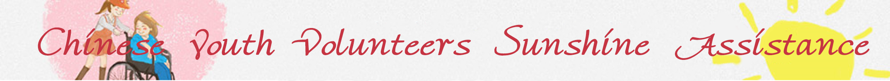
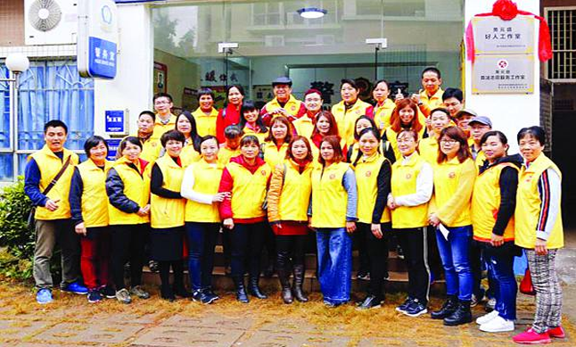

- Jingning County Committee of the Communist Party of China organized the organization of 2017 “New Year Cleansing” volunteer activities
- This charity plan has made many difficult children round their school dreams.
- 2017 College Student Volunteer Service Western Program Launched
- Central Committee of the Communist Youth League: Participating in volunteer service as an important part of the mission
- Li Keqiang presided over the State Council executive meeting to approve the Volunteer Service Regulations (Draft)
- Hunan party member volunteers repair vehicles for returning migrant workers


1.Local innovation initiatives provide precise volunteering services to achieve volunteer service “zero distance”
2.State Council: Promoting the disclosure of government information in the field of social welfare construction
3.Volunteer service lights up Jiangcheng people's public welfare dream, innovates to support the new height of "Volunteer City"
4.National Academic Lei Feng Volunteer Service Promotion Conference Held in Beijing
5.An important milestone in promoting the development of the Red Cross cause